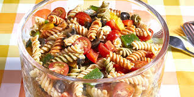

Pasta Salad
Home

Description
Pasta salad is a dish made with cooked pasta, typically chilled or served at room temperature, and tossed with a dressing, often a vinegar or mayonnaise-based one.
It can also include various ingredients like vegetables, cheese, meat, and herbs
Ingredients
- 1 pound tri-colored spiral pasta
- 16oz. bottle Italian-style salad dressing
- 6 tbsp salad seasoning mix
- 2 cups cherry tomatoes, diced
- 1 green bell pepper, chopped
- 1 red bell pepper, diced
- 1/2 yellow bell pepper, chopped
- 2 1/2oz. can black olives, chopped
Steps
- Bring a large pot of lightly salted water to a boil. Cook pasta in the boiling water, stirring occasionally,
until tender yet firm to the bite, about 10 to 12 minutes; rinse under cold water and drain
- Whisk Italian dressing and salad spice mix together until smooth. Combine pasta, tomatoes, bell peppers, and olives in a salad bowl
- Pour dressing over salad and toss to coat
- For the best flavor, refrigerate the pasta salad for 8 hours to overnight